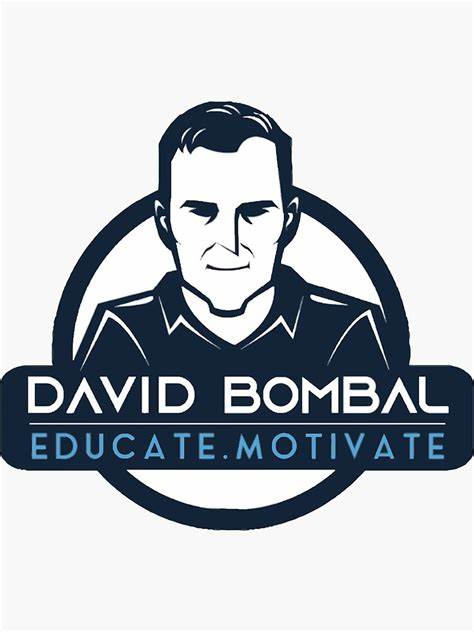
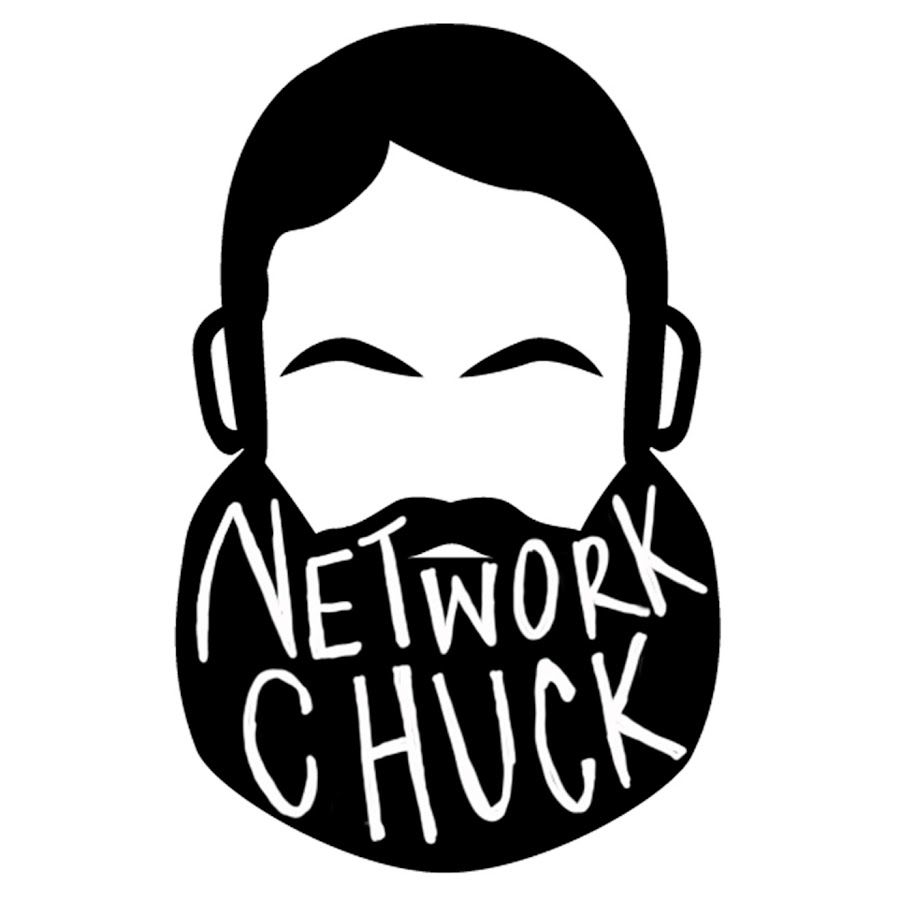
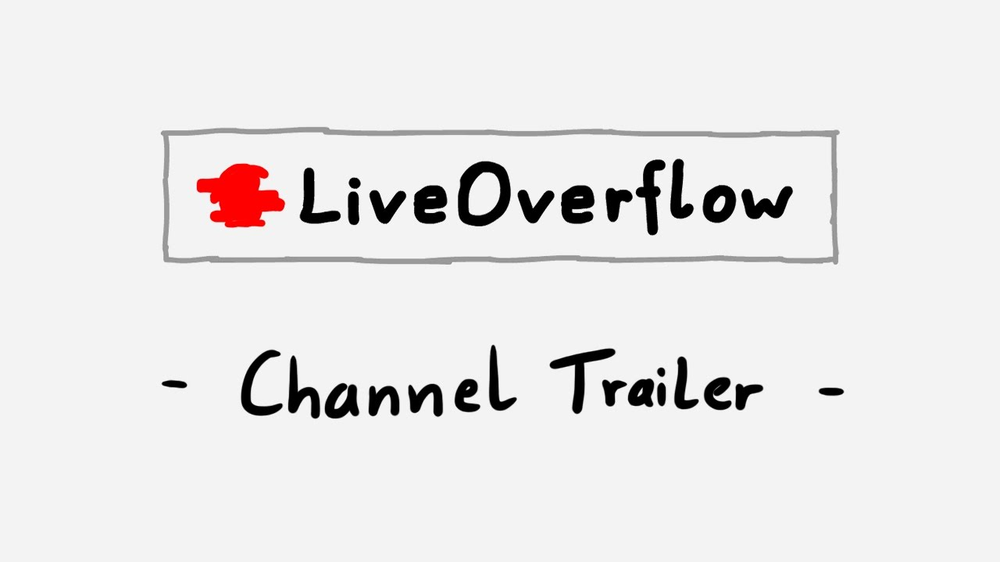
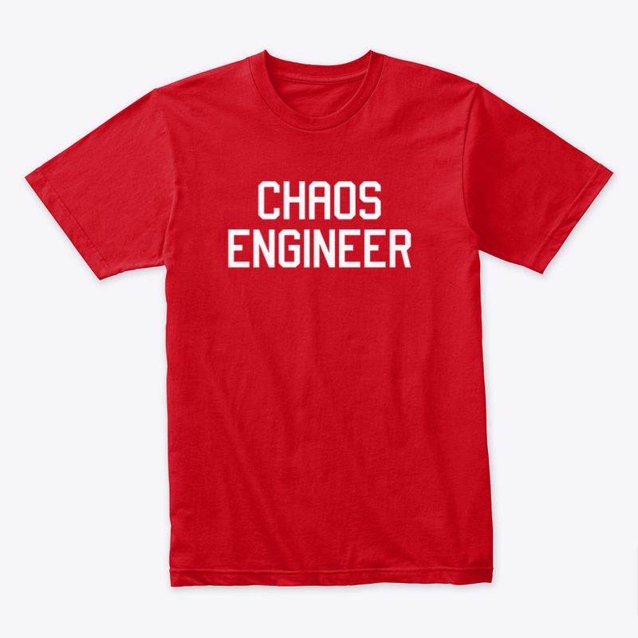
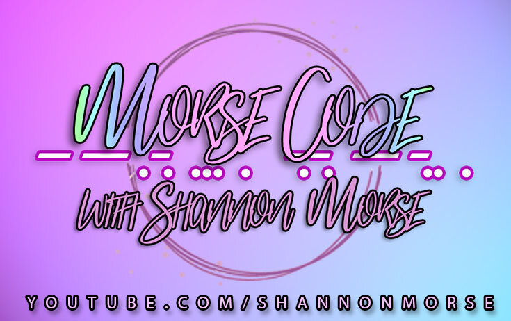
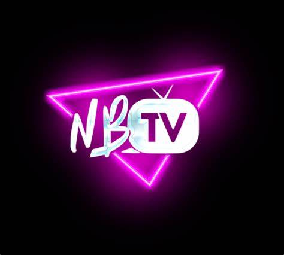

Canales Interesantes
YouTube permite adquirir conocimientos de forma gratuita.
A continuación una lista de Canales para aprender gratis. (Click en cada uno para navegar al canal)

David Bombal
Cursos, entrevistas y tutoriales de Ciberseguridad
John Hammond
Tutoriales de Ciberseguridad

NetworkChuck
Tutoriales de Tecnologías Populares

LiveOverflow
Tutoriales de Ciberseguridad

Jeff Geerling
Tutoriales de Software, Hardware e infraestructura.

Shannon Morse
Tutoriales y noticias de Seguridad

NBTV, with Naomi Brockwell
Tutoriales de Seguridad y Privacidad